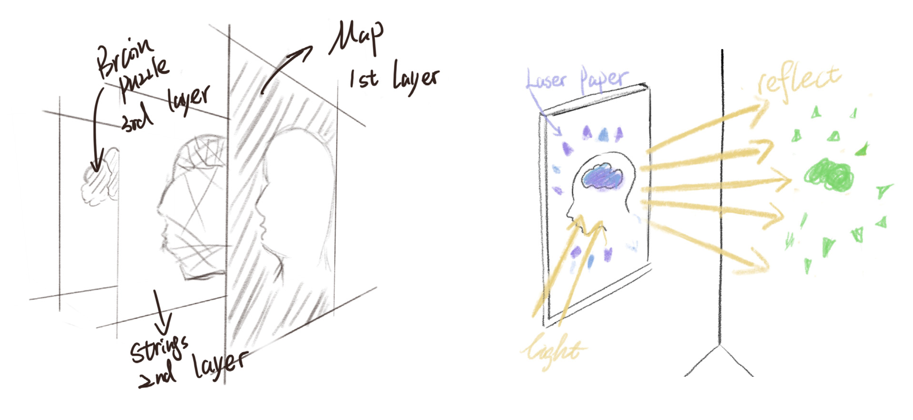
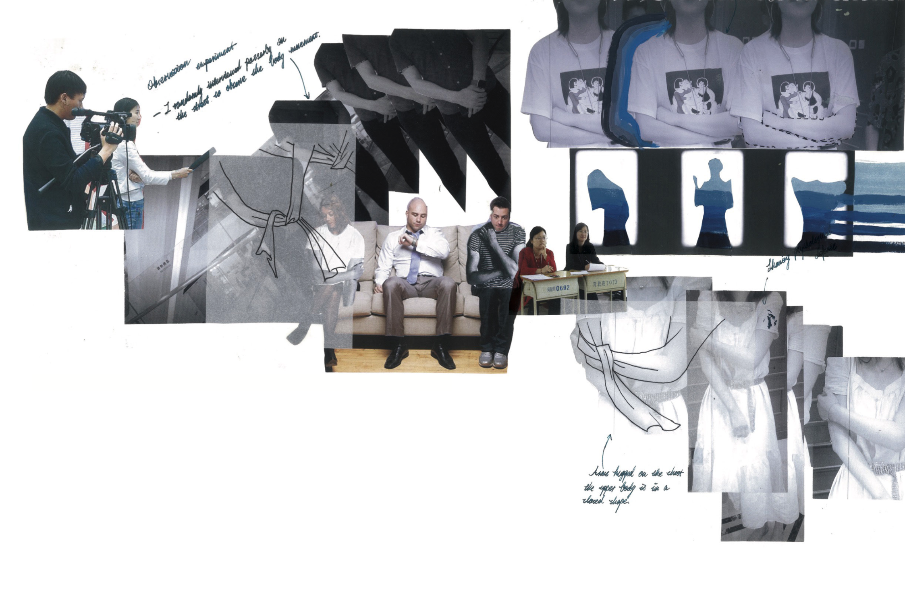

Lost

I interviewed my grandmother, and during the interview, she talked to me about how she got lost in Tianjin when she was a child. Although the old woman's memory is not very clear nowadays, she can still recall some important buildings and road signs. After the interview, I followed the clues from my grandmother's mouth and went on a fifield trip to Tianjin. I also found a map of Tianjin from the 1940s and 1950s in the local library and tried to recreate the route that the old man had lost according to the map. In addition, the name of the project also comes from this, "lost" represents both the event of been lost, as well as his faded memories.
I designed three panels of broken memories, nerves in my head and a map of my grandma's childhood. And I put laser paper on the outermost layer and used light to project its reflection on the other wall.


These integrated and intertwined lines represent the thoughts in the brain, and with dementia, these lines of thought become increasingly sparse and confused. As the dementia becomes more severe, these lines disappear little by little, and at that point, the memory will be completely gone. And the reflection on the other wall represents my grandmother as a child, accompanied by the memory of a golden glow.
